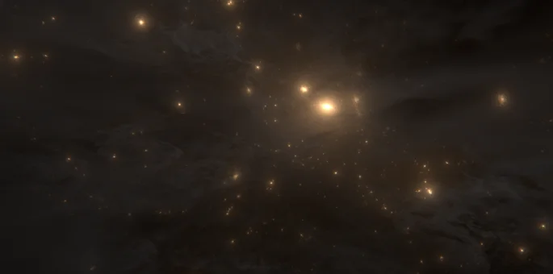

Making Astronomy Accessible to Everyone
Astronomy is for everyone, and our goal is to make sure that everyone can explore the Universe in a way that works for them. As part of this event, our team is focusing on accessibility, creating experiences that go beyond traditional visuals and open up astronomy to a wider audience.
Hearing the Universe: Sonified Astronomy
Not all discoveries need to be seen, they can also be heard. We are transforming astronomical data and videos into sound, a process known as sonification. By converting light, motion, and patterns into audio, visitors will be able to “listen” to astronomical phenomena such as stars, galaxies, and cosmic events. This offers a powerful way for visually impaired visitors, and anyone curious, to experience space in a completely new way.
Touching Space: 3D Models
We are creating tactile, 3D-printed models of astronomical objects so visitors can explore them through touch. These models may include galaxies, star clusters, or other structures in the Universe, allowing you to feel shapes, textures, and structures that are usually only seen in images. This hands-on approach helps make complex ideas more intuitive and engaging for all ages.
Braille and Inclusive Materials
To ensure information is accessible to as many people as possible, we are preparing materials in Braille alongside standard printed text. This allows visitors with visual impairments to independently access descriptions, explanations, and activity instructions during the event.
Designed for All Ages
Our activities are designed to be inclusive not only in accessibility, but also in age range. Whether you are a child discovering space for the first time or an adult with a long-standing curiosity about the Universe, there will be something for you to explore and enjoy.
Why Accessibility Matters
Science belongs to everyone. By developing accessible tools and experiences, we aim to remove barriers and create a more inclusive environment where all visitors can engage with astronomy in meaningful ways.